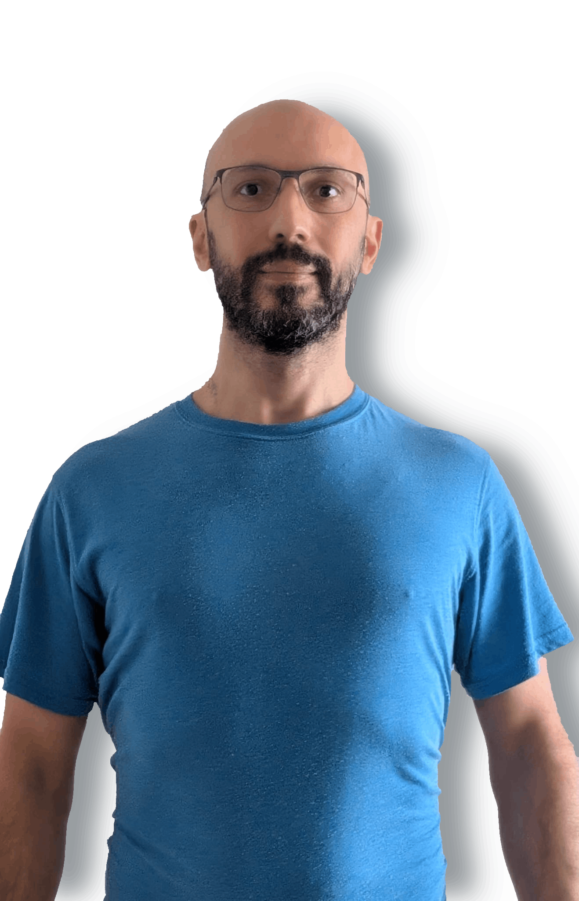

Om Mig

Hej!
Jag heter Paul Yashouh och läser den här kursen för att lära mig mer om webbutveckling och digital bildbehandling. I den här laborationen har jag arbetat med att skapa en enhetlig bildserie och anpassa grafiska element efter webbplatsens design.
På fritiden tycker jag om träna och umgås med min familj och mina vänner. Porträttbilden här bredvid har jag tagit själv och frilagt bakgrunden på i Photopea så att den smälter in direkt mot sidans mörkblå bakgrund.